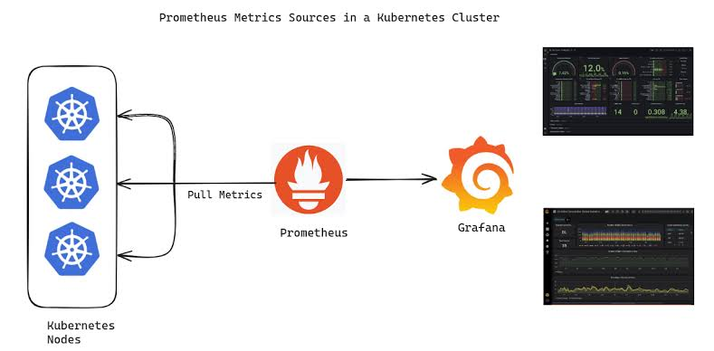

Akshay Kumar S
DevOps & DevSecOps Specialist | Java & Python Expert | Cloud Infrastructure & Security Expert | Corporate Trainer (Freelancer)
With over 3 years of experience in development, DevOps, and corporate training, I am committed to driving innovation through strategic automation, security-first approaches, and operational excellence. My expertise covers:
- Backend development with Python (Flask) and Java (Spring) for scalable, high-performance applications
- Advanced CI/CD automation using Jenkins, GitLab CI, and GitHub Actions
- Scalable containerization and orchestration with Docker and Kubernetes
- Infrastructure as Code (IaC) using Terraform and Ansible for streamlined deployment
- Comprehensive monitoring and logging with Prometheus and Grafana
- Security integration across the development lifecycle using DevSecOps tools like SonarQube and Trivy
- Experience in multi-environment setups (Windows, Mac, Linux - RHEL, Ubuntu)
- Agile methodologies and project management through the Scrum framework
As a corporate trainer, I empower teams to embrace DevOps and DevSecOps principles, cloud-native development, and performance optimization. My mission is to enhance software delivery through automated, secure, and collaborative workflows. Let’s connect and explore how my expertise can drive secure, faster, and efficient software delivery in your organization.
🛠️ Technical Skills
- Languages:
Java,
Python,
Shell/Bash Scripting
- Containerization & Orchestration:
Docker,
Kubernetes
- Cloud Platforms:
AWS,
Microsoft Azure
- CI/CD Tools:
Jenkins,
GitHub Actions
- Monitoring & Logging:
Prometheus,
Grafana
- Configuration Management:
Ansible
- Version Control:
Git,
GitHub
- Security & Compliance:
HashiCorp Vault,
SonarQube,
Trivy,
OWASP,
Burp Suite
- Artifact Storage:
Nexus
- Messaging:
Kafka,
RabbitMQ
- Web Servers & IaC:
Nginx,
Apache Tomcat,
Terraform
- Build Tool:
Maven
- Caching:
Memcached
- SDLC:
Requirement Analysis,
Design,
Implementation,
Testing,
Deployment,
Maintenance
- Agile:
Iterative Development,
Continuous Feedback,
Customer Collaboration,
Adaptive Planning
- Scrum:
Sprint Planning,
Daily Standups,
Sprint Review,
Sprint Retrospective
- Other:
Argo CD,
Helm
🚀 Signature Projects
1. Enterprise-Grade CI/CD Pipeline with Git, Jenkins, and Kubernetes

- Architected scalable CI/CD pipeline: Git, Jenkins, Kubernetes. Integrated Git workflows, pre-commit hooks, automated reviews.
- Multi-stage Jenkins pipeline: parallel execution, testing, security scanning (SonarQube, Trivy). Docker for containerization.
- Kubernetes: auto-scaling, rolling updates, self-healing. Helm charts for deployment. IaC with Terraform.
- Monitoring: Prometheus, Grafana, ELK stack. Results: 70% faster deployments, 99.99% uptime, 40% improved productivity.
2. 🏗️ Infrastructure as Code (IaC) with Terraform and Ansible

- Implemented Infrastructure as Code (IaC) with Terraform for AWS resources, enhancing reproducibility and scalability.
- Automated server configuration and deployment with Ansible, reducing manual setup time by 30%.
- Integrated CI/CD pipelines with infrastructure provisioning for rapid feature deployment.
- Designed modular Terraform configurations for different environments, ensuring consistency.
- Implemented state management using Terraform Cloud for collaborative development.
- Integrated HashiCorp Vault for secure management of sensitive data in infrastructure provisioning.
3. 🛡️ Container Security Scanning with Trivy and OWASP

- Integrated Trivy into CI/CD for Docker image vulnerability scanning, ensuring security compliance.
- Conducted OWASP-based security audits, identifying and fixing critical vulnerabilities.
- Developed vulnerability tracking system and custom dashboard for visualizing scan results.
- Implemented automated remediation workflows, reducing fix time by 50%.
- Enhanced container security with signing, verification, and Kubernetes network policies.
4. 📊 Monitoring and Observability with Prometheus and Grafana
- Implemented Prometheus and Grafana for real-time monitoring of application and infrastructure performance.
- Configured alerts and dashboards for quick identification of performance issues and system failures.
- Set up Node Exporter and Blackbox Exporter for comprehensive hardware and external service monitoring.
- Developed custom exporters and implemented PromQL for advanced metric analysis.
- Integrated Alertmanager for efficient alert handling, reducing incident response times by 40%.
- Implemented Jaeger for distributed tracing across microservices.
5. 🧰 Code Quality and Artifact Management with SonarQube and Nexus

- Integrated SonarQube for continuous code quality inspection, improving maintainability and reducing technical debt.
- Used Nexus for artifact management, streamlining releases and ensuring consistent deployments.
- Implemented versioning strategies for enhanced traceability and rollback capabilities.
- Developed custom SonarQube quality gates and metrics for project-specific needs.
- Set up Nexus as a private Docker registry, improving container image security and distribution.
🏆 Groundbreaking Achievements & Innovations
- Architected DevOps mastery program, transforming 200+ IT pros into experts.
- Created GitOps curriculum, reducing deployment errors by 85%.
- Integrated chaos engineering, improving resilience and reducing downtimes by 80%.
- Developed knowledge repo and workshops, accelerating DevOps learning by 60%.
- Created gamified learning platform, boosting engagement by 95%.
- Established industry-academia partnerships, improving graduate job placement by 70%.
- Launched mentorship program, connecting veterans with newcomers.
 LinkedIn
LinkedIn